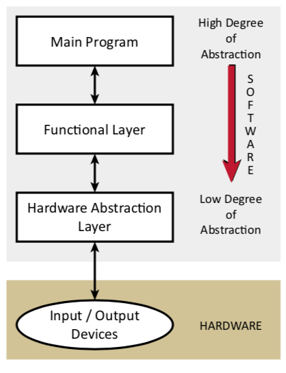
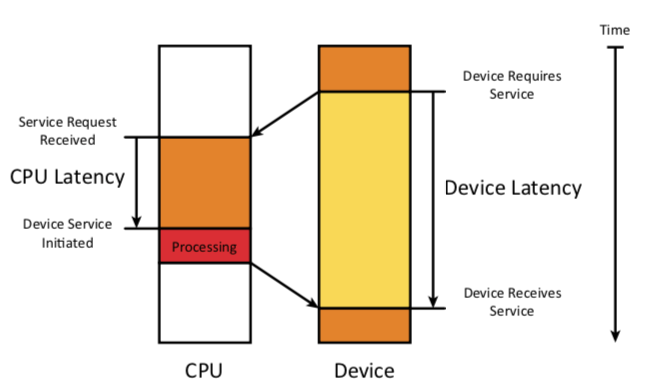
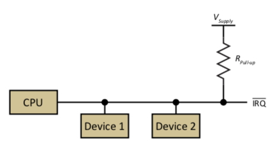
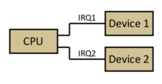
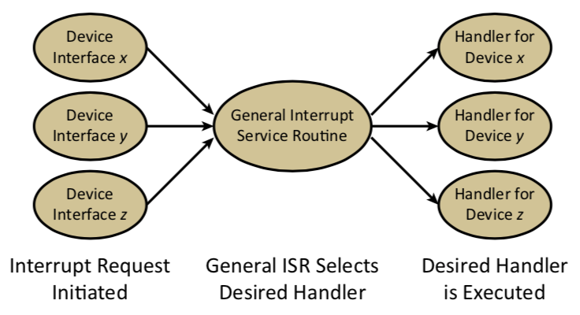
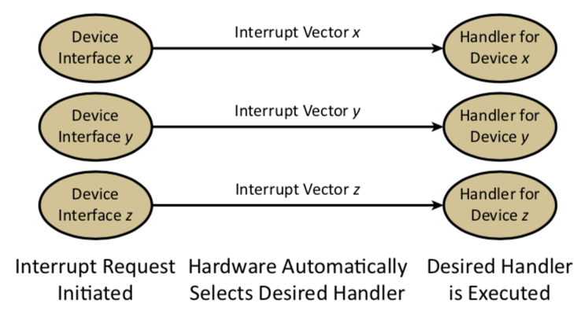

Section 3 - Software, Synchronization, and Device Drivers
Aditya Arora
Software Development:
devdrv-software-development
Microprocessor systems require both hardware and software design
Good software is written in a modular manner
Low level functions typically interact directly with hardware devices to do the following tasks:
Initialize device configuration
Read or write data
Synchronize using polling or interrupts
Software Synchronization
devdrv-software-synchronization
When a device completes its task, the device must synchronize with the processor
Events may be assigned priorities to ensure minimum latency for high priority events
CPU Latency and Device Latency: CPU latency is the time between the receipt of a service request and the initiation of service. Latency can involve both hardware and software delays. Real-Time System: A system that guarantees a worst-case latency for critical events. Note that it does not have to be a very small latency, by definition it only needs to have a worst case
Performance: Latency and Throughput
Latency: The delay between the arrival of the request and the completion of service. One could also consider the average latency or the maximum latency by considering more results. (Note: On the surface this appears to be slightly different than the definition of CPU Latency defined earlier. However, this difference can be resolved by noting that the system is viewed as completing the request once the ISR has started.) Throughput: A measure of how many items can be processed per unit of time. For example, a system could have a very high latency (5 years for Waterloo Engineering) but still have a throughput of 900 graduates per year.
Synchronization Mechanisms
Blind Cycle: Software waits for some amount of time and then acts on the data whether
or not the device is ready. Occasional Polling: Device status is checked at the convenience of the designer. Periodic Polling: Device status is checked after a pre-determined amount of time and this repeats until the device is done. This is usually implemented with a timer interrupt. Tight Polling Loop (Gadfly or Busy Waiting): Software continuously checks the I/O status, waiting for the device to be done. Although this is often implemented as a very tight loop (i.e., continuously testing one status register and looping until the device is ready), it could be implemented as a sequence of tests (i.e., continuously testing a set of status registers and looping until a device in the set is ready). Interrupt Handling: Device generates a hardware interrupt to request service immediately.
Performance of Synchronization Mechanisms
Some synchronization mechanisms are CPU-oriented:
Device waits for the CPU to initiate synchronization
Examples include blind cycle, occasional polling, and periodic polling
Some synchronization mechanisms are device-oriented:
Device demands immediate service to reduce device latency
Examples include tight polling and interrupt handling
Polling Loop Synchronization - Processing Input Data
Poll the device, wait until data is available, and then read the input data
// Loop until data is available
while (not data_available) loop
// Read the input data
read data
// Clear data_available if not done automatically by hardware
clear data_available
// Process the input data
process data
// Exit subroutine and return to caller
return
Polling Loop Synchronization - Outputting Data
Conservative Option: Assume the device is not initially ready, poll the device, wait until device is ready, and then output the data
while (not ready_to_output) loop // Wait for the device to be ready to continue
clear ready_to_output // Clear manually if required by hardware
output data // Output the data
return // Exit subroutine
Optimistic Option: Assume the device is initially ready, output the data, poll the device, and wait until device is ready
clear ready_to_output // Clear manually if required by hardware
output data // Output the data
while ( not ready_to_output ) loop // Wait for the device to be ready to continue
return // Exit subroutine
Interrupt Synchronization
A device notifies the CPU of an interrupt request
CPU completes execution of the current instruction
Execution of the main program is suspended
Interrupts are disabled (processor specific)
Some internal registers are saved (including the program counter)
Device may be acknowledged
Interrupt service routine is selected
Interrupt service routine is executed (more on this later)
Registers are restored, if required, including the program counter
Interrupts are enabled (processor specific)
Execution of the main program resumes
CPU Notification
Interrupts must be handled from multiple sources
Single interrupt request line

Multiple interrupt request lines

Interrupt Service Routine (ISR) Selection
Non-vectored interrupts
Devices are polled to determine source
Priority must be determined (in software)

ISR Selection
Vectored Interrupts
Requests are associated with an interrupt vector
Fixed priority associated with the interrupt vector
Interrupt service routine (ISR) at vector address is executed

Interrupt Service Routine (ISR)
ISRs should execute as fast as possible since they are interrupting other tasks
ISRs must avoid blocking (synchronous) I/O functions
An ISR is typically structured as follows:
Save any registers modified by the ISR
Acknowledge the device (if required)
Re-enable interrupts to allow higher or same priority interrupts (if desired)
Test for a valid interrupt and/or determine the exact source of the interrupt
Complete desired action
Restore registers (interrupts may need to be disabled during this step)
Return from interrupt
Interrupt Initialization
The following steps need to be taken when initializing a software system that uses interrupts:
Disable all interrupts
Enable device interface interrupts by setting appropriate device interface registers
Set interrupt mask to allow interrupts from device
Initialize interrupt vector with address of ISR
Enable interrupts as required
Steps 2, 3, and 4 may be performed in any order provided that all interrupts are disabled.
Device Drivers
A device driver is the software associated with a particular device. The device driver includes:
Data Structures
Variables needed to access the device interface registers
Variables associated with the state of the device
Data buffers
Initialization Functions
Device initialization
Synchronization initialization
Initialization of driver variables
I/O Functions
Functions to input from the device and/or output to the device
Interrupt Service Routine(s)
The NIOS system provides data structures and driver functions for its devices as part of the custom Software Development Kit (SDK) created for each embedded system design. This information can be found in nios.h and nios peripherals.h.